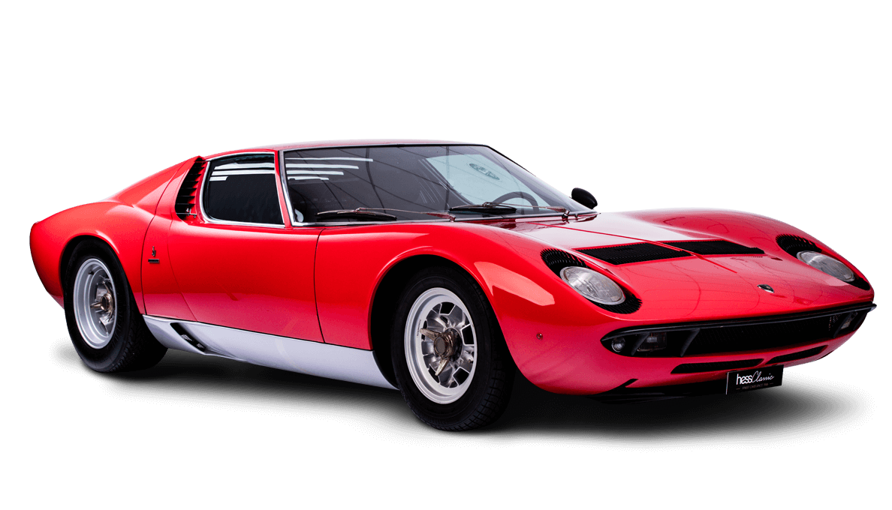

Es considerado como el primer superdeportivo de la historia del automóvil. Este vehículo fue diseñado en secreto y se inspiró en el circuito de carreras Le Mans.
Historia Resumida
El Lamborghini Miura es uno de los coches deportivos más icónicos de la historia. Fue diseñado por el joven ingeniero Marcello Gandini de Bertone, y fue el primer automóvil en ser considerado un superdeportivo moderno con un motor central trasero y un diseño futurista. El Miura fue desarrollado en secreto por el equipo de diseño liderado por Gandini, y el prototipo fue presentado en el Salón del Automóvil de Turín en 1965.
La producción del Miura comenzó en 1966 y se extendió hasta 1973, durante la cual se produjeron 764 unidades. El primer modelo, el P400, estaba equipado con un motor V12 de 4.0 litros que generaba 350 caballos de fuerza y tenía una velocidad máxima de 280 km/h. El Miura también presentaba un diseño innovador, con puertas en forma de tijera que se abrían hacia arriba y una línea de techo baja y curvas fluidas que lo hacían parecer un automóvil de carreras.
En 1969, se introdujo el modelo P400S, que presentaba varias mejoras en la suspensión y la aerodinámica, así como un motor actualizado de 370 caballos de fuerza. La versión final, el P400SV, se lanzó en 1971 y presentaba una serie de mejoras adicionales, incluyendo un motor V12 de 4.0 litros con una potencia de 385 caballos de fuerza.
El Lamborghini Miura fue revolucionario en muchos aspectos. Fue el primer automóvil deportivo de producción en serie con un motor central trasero, lo que mejoró significativamente la distribución de peso y la maniobrabilidad del vehículo. También fue el primer automóvil que presentó un diseño futurista que se alejaba de los estilos tradicionales.
El Miura también tuvo un gran éxito en la pista. En 1967, Lamborghini lanzó una versión de carreras del automóvil llamada Miura Jota, que presentaba mejoras significativas en el motor, la suspensión y la aerodinámica. Aunque solo se produjeron dos unidades, el Miura Jota logró varios récords de velocidad y ganó numerosas carreras de resistencia.
Además de su diseño espectacular y su velocidad, el Lamborghini Miura también fue uno de los primeros coches deportivos de alta gama en contar con una transmisión manual de cinco velocidades y una suspensión independiente en las cuatro ruedas.
El Lamborghini Miura ha mantenido su estatus de leyenda en el mundo del automovilismo a lo largo de los años. Ha sido presentado en numerosas películas y programas de televisión, y ha sido objeto de numerosos libros y artículos de revistas. En la actualidad, los Miuras originales son muy buscados por los coleccionistas y suelen venderse por millones de dólares en subastas de coches clásicos. En resumen, el Lamborghini Miura es un icono del automovilismo y seguirá siendo admirado y venerado por los amantes de los coches durante muchos años más.
Video
Resumen de video
El video continúa discutiendo el diseño del Miura, que fue una colaboración entre varios ingenieros jóvenes, incluidos Gian Paolo Dallara y Paolo Stanzani. El automóvil fue diseñado en solo unos meses y debutó en el Salón del Automóvil de Ginebra de 1966, donde fue una sensación instantánea. El video también menciona a algunos de los propietarios famosos de Miura, incluidos Frank Sinatra y Miles Davis. El Miura allanó el camino para los futuros Lamborghinis, incluidos Countach, Diablo y Murcielago, y su legado aún se puede ver en los modelos modernos de Lamborghini.
Creador de video
AutoRev, en youtube
Video
Resumen de video
El Lamborghini Miura se presentó en el Auto Show de Turín y rápidamente se convirtió en un éxito debido a su diseño innovador con un motor central y una estructura liviana. El Miura, creado por el departamento de diseño de Bertone, dirigido por Marcello Gandini, fue el primer superdeportivo que se fabricó y albergaba un motor V12 con cuatro carburadores Weber. El Miura fue nombrado en honor al famoso criador de toros español. La producción del automóvil se detuvo debido a la falta de interés y se vio ensombrecida por el lanzamiento del Lamborghini Countach, pero sigue siendo un ícono en el mundo de los superdeportivos debido a su impacto significativo en el diseño y el rendimiento del vehículo.
Creador de video
cART's Arte Automotriz, en youtube
Webgrafia